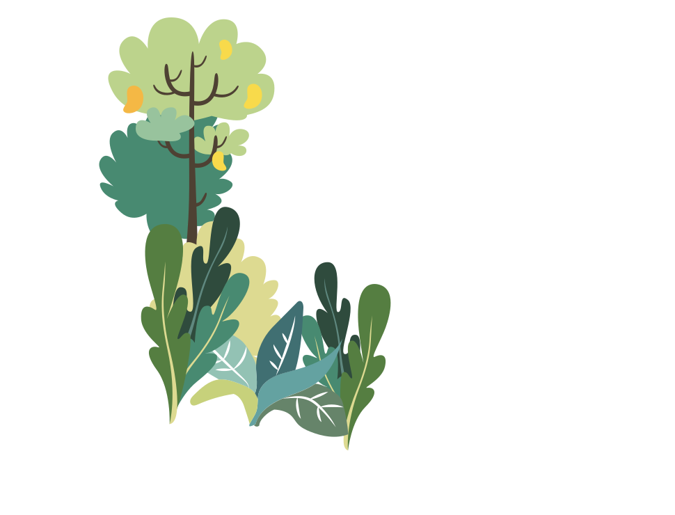
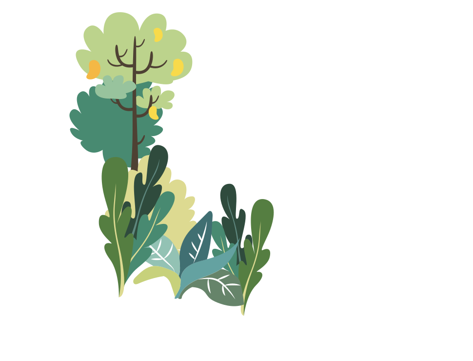

วิถีทฤษฎีใหม่
หลักการสำคัญของทฤษฎีใหม่
คือการบริหารจัดการทรัพยากรโดยเฉพาะดินและน้ำที่มีอยู่จำกัดให้เกิด
ประโยชน์สูงสุด
เพื่อให้เกษตรกรสามารถดำเนินชีวิตอยู่ได้อย่างพอเพียง โดยเน้นการพึ่งพาตนเองให้มากที่สุด
เหตุที่เรียก "ทฤษฎีใหม่"


มีการบริหารและจัดแบ่งที่ดินขนาดเล็กออกเป็นสัดส่วนที่ชัดเจน เพื่อประโยชน์สูงสุดของเกษตรกร

มีการคำนวณโดยหลักวิชาการ เกี่ยวกับปริมาณน้ำที่จะเก็บกักให้พอเพียงต่อการเพาะปลูกได้อย่างเหมาะสมตลอดปี

มีการวางแผนที่สมบูรณ์แบบ ประกอบด้วย 3 ขั้นตอน
รู้จักทฤษฎีใหม่
หลังจากที่พระบาทสมเด็จพระปรมินทรมหาภูมิพลอเดช บรมนาถ บพิตร เสด็จเยี่ยมราษฎรที่บ้านกุดตอแก่น ต.กุดสินคุ้มใหญ่ อ.เขาวง จ.กาฬสินธุ์ เมื่อวันที่ 25 พฤศจิกายน 2535 ได้ทรงเห็น สภาพความยากลําบากของราษฎรในการทําเกษตรในพื้นที่อาศัย นําฝนที่ปลูกข้าวได้ประมาณ 1 ถัง ต่อ 1 ไร่ เพราะปลูกได้ปีละครั้ง ในช่วงฤดูฝนเท่านั้น
ปัญหาหลักของเกษตรกร
ในอดีตจนถึงปัจจุบัน
ที่สำคัญประการหนึ่ง คือ การขาดแคลนน้ำเพื่อเกษตรกรรม โดยเฉพาะอย่างยิ่งในเขตพื้นที่เกษตรที่อาศัยน้ำฝน ซึ่งเป็นพื้นที่ส่วนใหญ่ของประเทศที่อยู่ในเขตที่มีฝนค่อนข้างน้อยและส่วนมากเป็นนาข้าวและพืชไร่ เกษตรกรยังคงทำการเพาะปลูกได้ปีละครั้งในช่วงฤดูฝน และมีความเสี่ยงกับความเสียหาย อันเนื่องมาจากความแปรปรวนของดินฟ้าอากาศและฝนทิ้งช่วง แม้ว่าจะมีการขุดบ่อหรือสระเก็บน้ำไว้ใช้บ้างแต่ก็มีขนาดไม่เพียงพอ หรือมีปัจจัยอื่น ๆ ที่เป็นปัญหาให้มีน้ำใช้ไม่เพียงพอ รวมทั้งระบบการปลูกพืชไม่มีหลักเกณฑ์ใดๆ และส่วนใหญ่ปลูกพืชชนิดเดียว
ด้วยเหตุนี้ พระบาทสมเด็จพระเจ้าอยู่หัวฯ จึงทรงศึกษา รวบรวมข้อมูลนำมาวิเคราะห์และได้พระราชทานพระราชดำริ เพื่อให้สามารถผ่านพ้นช่วงเวลาวิกฤติการขาดแคลนน้ำได้โดยไม่เดือดร้อนและยากลำบากพระราชดำรินี้ ทรงเรียกว่า "ทฤษฎีใหม่" อันเป็นแนวทางการจัดการที่ดินและน้ำเพื่อการเกษตรในที่ดินขนาดเล็กให้เกิดประโยชน์สูงสุด โดยทรงทดลองเป็นแห่งแรกที่วัดมงคลชัยพัฒนา ตำบลห้วยบง อำเภอเมือง จังหวัดสระบุรี

ประโยชน์ทฤษฎีใหม่
จากพระราชดำรัสของพระบาทสมเด็จพระปรมินทรมหาภูมิพลอดุลยเดช บรมนาถบพิตรที่ได้พระราชทานใน โอกาสต่าง ๆ นั้น พอสรุปถึงประโยชน์ของทฤษฎีใหม่ได้ดังนี้
ให้ประชาชนพออยู่พอกินสมควรแก่อัตภาพในระดับที่ประหยัดไม่อดอยาก และเลี้ยงตนเองได้ตามหลักปรัชญา “เศรษฐกิจพอเพียง” ในหน้าแล้งมีน้ำน้อย ก็สามารถเอาน้ำที่เก็บไว้ในสระมาปลูกพืชผัก เลี้ยงปลา หรือทำอะไรอื่น ๆ ก็ได้แม้แต่ข้าวก็ยังปลูกได้ไม่ต้องเบียดเบียนชลประทาน ระบบใหญ่เพราะมีของตนเอง ในปีที่ฝนตกตามฤดูกาลโดยตลอดปี ทฤษฎีใหม่นี้ก็สามารถสร้างรายได้ ให้ร่ำรวยขึ้นได้ ในกรณีที่เกิดอุทกภัยก็สามารถที่จะฟื้นตัวและช่วยตัวเองได้ในระดับหนึ่ง โดยทางราชการไม่ต้องช่วยเหลือมากเกินไป อันเป็นการประหยัดงบประมาณด้วย
 
